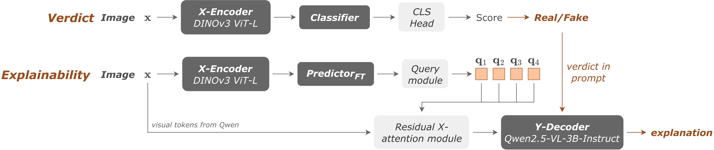

Overview
TL;DR
FOX first builds and locks a specialist DINOv3 detector, then uses a joint-embedding predictor to map its locked visual evidence into a frozen text encoder's semantic space, which a lightweight VLM verbalizes as a forensic explanation on demand. Because explanation training happens strictly after the verdict is locked, it cannot alter detection: the detector decides, language only explains.
Abstract
AI-generated images have reached unprecedented realism, while instruction-driven AI editors re-synthesize images for local changes, leaving no splice boundary to localize. Most detectors are black boxes with unverifiable verdicts and generalize poorly because adapting a backbone on the detection distribution memorizes generator-specific fingerprints that quickly become obsolete. Specialist detectors built on pure-vision representations, particularly DINOv3, generalize well across generators, but explainable methods forgo this advantage: jointly training one multimodal model for classification and language generation subjects its visual representation to the language objective. We therefore require that explanation training cannot alter the verdict. We introduce FOX, which first builds and locks a specialist DINOv3 detector, then uses its representation to guide a lightweight VLM toward forensic explanation. A joint-embedding predictor maps locked visual evidence into a frozen text encoder's semantic space, producing guidance that the VLM verbalizes on demand. FOX achieves 97.4 mean AUC across 14 unseen generators, 69.8 BERTScore on XPlainVerse, and 56.1 on LOKI.
Motivation
Why decouple detection from explanation?
Instruction-following editors now re-synthesize an entire image rather than splicing a region into it, so there is no pasted patch or boundary to localize, and forensic localization operates near chance. A bare real-or-fake score is then of limited use: journalists, moderators, and users need to know why an image was flagged. Four problems stand in the way, each pulling against the others.
Unverifiable verdicts
Most detectors are black boxes: humans cannot check why a verdict was reached.
Fingerprints go stale
Unconstrained backbone adaptation memorizes generator-specific traces that transfer poorly to new generators.
Artifacts fade
High-frequency traces that improving generators mimic, and that resizing or compression destroys.
Language hurts vision
Explainable MLLM detectors jointly optimize classification and generation, so the language objective reshapes the very representation detection depends on, and weakens it.
Our approach
We ask: rather than making one model responsible for both perception and language, can we first obtain the strongest possible detector and use its representation to help a lightweight VLM explain the fixed verdict? A JEPA provides a natural interface: it predicts what the forensic evidence says rather than one exact token realization, targeting the semantic space of a frozen text encoder where semantically equivalent explanations stay nearby despite different wording. A VLM then verbalizes that representation only when requested, with the detector permanently locked throughout.
Method
Three training stages
FOX (FOrensic eXplanations) separates detection from explanation into three stages, each with its own objective and frozen components, so a later stage can never reach back and change an earlier one's verdict.

Inference in FOX. (Top) Detection uses a pure-vision encoder: the verdict is read from the Classifier logits over the adapted X-Encoder, without language-model decoding. (Bottom) Explanation is separate: PredictorFT converts the detector's visual representation into caption-space forensic guidance that the Y-Decoder verbalizes, conditioned on the locked verdict.
Stage 1 — verdict prediction
A LoRA-adapted DINOv3 encoder (the X-Encoder) is trained jointly with a linear classifier under cross-entropy on the binary authenticity label alone; no caption, text encoder, or explanation objective participates. Checkpoints are selected by AUC on an external validation set whose generators are disjoint from training. The selected encoder and classifier are then locked and define the verdict function used for the rest of the pipeline.
Stage 2 — joint embedding prediction
With the X-Encoder locked and a text Y-Encoder frozen, a predictor is trained to align each predicted embedding \(\hat{s}_y\) with the target embedding \(s_y\) of its own reference explanation, contrasted against the other explanations in the batch:
Because the Y-Encoder is frozen, the targets are fixed points in a pretrained space, so the trivial solution where both sides collapse to a constant is unavailable, and the contrastive term further penalizes a constant predictor directly.
Stage 3 — explanation decoding
A language-side LoRA on the Y-Decoder first learns to generate reference explanations conditioned only on the image and the locked verdict written into the prompt as a word. A small cross-attention module with four learned query slots then attends over the predictor's hidden state to produce query vectors, fine-tuned jointly with the predictor via a symmetric query-to-sentence InfoNCE objective. Finally, a zero-initialized residual adapter conditions the decoder's visual tokens on these query vectors, trained alone with cross-entropy on the reference explanations.
Results
Strong detection, robust to perturbation
Under a common readout, view-consistency self-supervised encoders transfer best for forensic detection, with DINOv3 the strongest; brief LoRA adaptation selected on an external generator distribution further improves transfer. The resulting detector generalizes across 14 unseen generators while staying robust to common image perturbations.
Qualitative examples
What does the FOX say?
Play the songThe guided Y-Decoder verbalizes the forensic evidence captured by the locked detector's representation, for both fakes and real images, including generators never seen during training. Select an example:
Conclusion
The detector decides, language only explains
We presented FOX, which decouples reliable detection from forensic explanation. A briefly adapted DINOv3 detector transfers strongly across unseen generators and remains robust to common perturbations. Once locked, a joint-embedding predictor maps its visual evidence into a frozen text space that guides a lightweight VLM. Explanation training therefore cannot alter the verdict, and still benefits from the specialist detector's representation. Our results show that strong detection and explanation need not compete: the detector decides, and language only explains the fixed verdict.
Citation
BibTeX
@misc{giakoumoglou2026fox,
title={{Generalizable AI-Generated Image Detection with Embedding-Space Explanations}},
author={Nikos Giakoumoglou and Paschalis Giakoumoglou and Tania Stathaki and Symeon Papadopoulos},
year={2026},
eprint={2611.04111},
archivePrefix={arXiv},
primaryClass={cs.CV},
url={https://arxiv.org/abs/2611.04111},
}